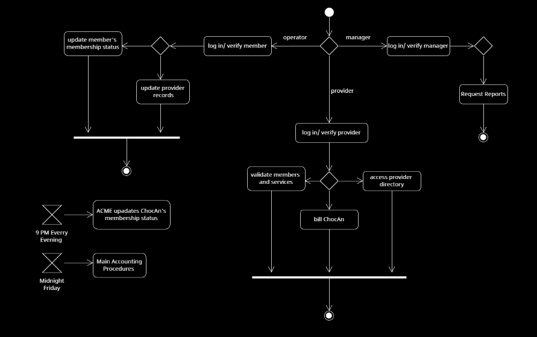
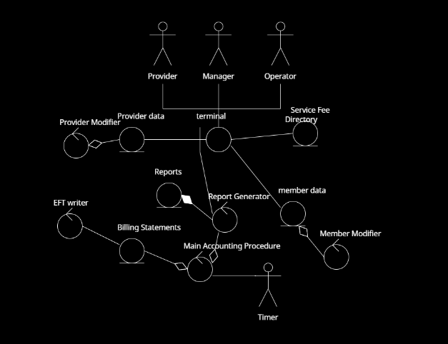

| Student Name | CWID Number | Student Email | Hours Contributed |
|---|---|---|---|
| Charstel Walsh | 12223125 | cewalsh4@crimson.ua.edu | 3 hours |
| Devin Moreno | 12277064 | dtmoreno1@crimson.ua.edu | 3 hours |
| Evan Hardt | 12307993 | echardt@crimson.ua.edu | 3 hours |
| Casey Derringer | 12144263 | cjderringer@crimson.ua.edu | 3 hours |
| Christian Radman | 12268645 | caradman@crimson.ua.edu | 3 hours |
| Josh Keane | 12205504 | jkeane@crimson.ua.edu | 7 hours |
| Student Name | Tasks Performed | Percentage Contributed |
|---|---|---|
| Charstel Walsh | Short estimation paragraph | 15% |
| Devin Moreno | The activity diagrams, with includes and extends. | 15% |
| Evan Hardt | Helped with diagrams | 16% |
| Casey Derringer | Made the Stereotype Diagram | 16% |
| Christian Radman | Helped with diagrams | 16% |
| Josh Keane | Made the original Activity Diagram and created the HTML report. | 16% |

